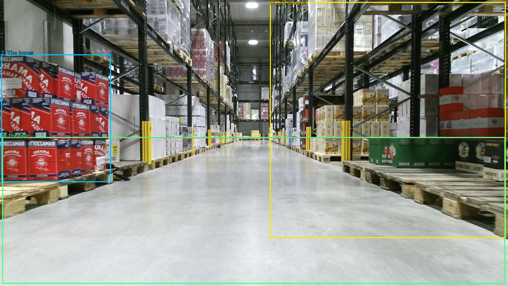

The image shows a large warehouse with a long, narrow aisle. The floor is made of concrete and the walls are made of metal beams. On either side of the aisle, there are rows of shelves with stacks of boxes and pallets. The boxes are red and white in color and appear to be filled with various items. The shelves are arranged in neat rows and the floor is clean and well-maintained. The warehouse appears to be well-lit with overhead lights.

Original · Caption raw · Grounding raw · Koordinate
Številke so lokalni ID regije. Dolge slikovne oznake so skrajšane; spodaj so celotne fraze. Napovedane regije se lahko prekrivajo ali opisujejo skupine.
| ID | Celotna fraza | bbox xyxy |
|---|---|---|
| 1 | The floor | [8.639999389648438, 518.9400024414062, 1909.43994140625, 1071.9000244140625] |
| 2 | The boxes | [4.799999713897705, 205.74000549316406, 419.5199890136719, 687.4200439453125] |
| 3 | The shelves | [1020.47998046875, 7.020000457763672, 1911.3599853515625, 898.02001953125] |
| 4 | the floor | [8.639999389648438, 517.8600463867188, 1909.43994140625, 1071.9000244140625] |